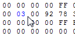

Содержание
Заморозка напрямую связана с окном Cheats, которое открывается в эмуляторе FCEUX во вкладке Tools.
Заморозка запрещает коду изменять байт в адресах RAM $0000-$07FF. Такая функция называется "созданием чита" в эмуляторах. Это бывает полезно во многих случаях, например:
Чтобы заморозить байт в адресе, нужно при необходимости поставить эмулятор на паузу, записать желаемый байт, а затем кликнуть по адресу правой кнопкой и выбрать Freeze/Unfreeze Address.
В некоторых случаях заморозка не будет работать с ожидаемым результатом. Заморозка лишь запрещает игре изменять байт в этом адресе, но она не запретит ей считать байт и произвести над ним какие-то отдельные вычисления.
Если взять в пример игру Battle City, и заморозить байт #$01 в адресе с жизнями $0051 с целью получения бесконечных жизней, все равно будет вызыван Game Over после смерти игрока.
Происходит это потому, что инструкция DEC, которая уменьшает байт в адресе, считывает этот байт, уменьшает на #$01, и затем пытается записать его обратно. Ей это не удается из-за заморозки адреса, однако результат уменьшения байта отобразится в состоянии процессора как Z = 1, поскольку в результате уменьшения получился байт #$00.
Далее выполняется инструкция условного перехода, проверяющая на флаг Z, в результате которой будет вызван Game Over, несмотря на то, что в адресе с жизнями был заморожен байт #$01.
Чтобы предотвратить такую ситуацию, нужно замораживать байт побольше, например #$02.
Это относится не ко всем играм, а также схожая ситуация может случиться и с другими адресами, отвечающие за иные игровые функции. Это может дать тебе подсказку о том, как работает код данной функции.
Замороженные адреса (а точнее читы) хранятся в одноименном файле .cht, который находится в папке cheats. Если оставить заморозку адресов включенной и закрыть ROM, то при следующем запуске игры в окне эмулятора будет отображено количество активных читов, которые, вероятно, будут только мешать, если они тебе больше не нужны.
Чтобы исправить ситуацию, разморозь адреса через Hex Editor или удали/деактивируй читы в окне Cheats.
Предварительно можно выделить сразу несколько адресов для заморозки/разморозки некого диапазона.
В состоянии заморозки могут находиться одновременно не более 256-ти адресов. Если точнее, то количество читов в окне Cheats не может быть более 256-ти.
Переключает состояние адреса на замороженный/размороженный.
Если байт был разморожен, он заморозится. Если был заморожен, то разморозится.
Возможно для заморозки будет удобнее пользоваться именно этой опцией на размороженных адресах, а не Freeze, так как Toggle находится вверху списка.
Замораживает байт в адресе. Байт перекрасится в синий цвет, и изменить его можно будет лишь через окно Cheats.

Если байт уже был заморожен, ничего не изменится.
Замороженный байт в основной RAM не отображается в зеркалах, а также замороженное зеркало не отображается в основной RAM и в двух других зеркалах. Заморозка зеркал не влияет на основную RAM.
Если в окне Cheats отключена опция Enable cheats, заморозка не сработает, несмотря на то, что байт все равно будет выделен синим цветом (когда он не изменяется).
Размораживает байт в адресе.
Если байт уже был разморожен, ничего не изменится.
Если во время того, как байт в адресе был заморожен, игра пыталась изменить байт в этом адресе, то после разморозки ты увидишь байт, который оказался в результате последней такой попытки.
Если же игра не пыталась изменить байт, то он таким и останется после разморозки.
Однако может быть и такое, что результатом последней попытки изменить байт окажется тот же самый байт, который ты замораживал.
Для отслеживания байтов, которые игра пытается записать в адрес во время заморозки, можно просматривать зеркало этого адреса в Hex Editor'е. Еще можно воспользоваться Write брейкпоинтом, либо записать лог через окно Trace Logger и затем изучить его.
Аналогично Unfreeze, только размораживает сразу все замороженные адреса. Предварительно можно кликнуть по любому адресу RAM.